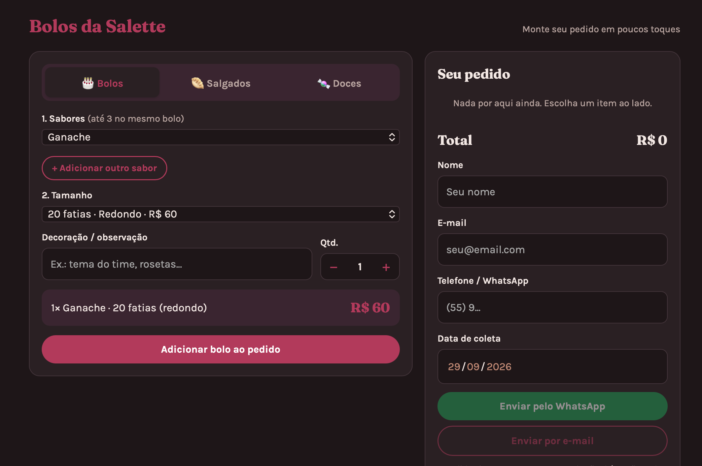
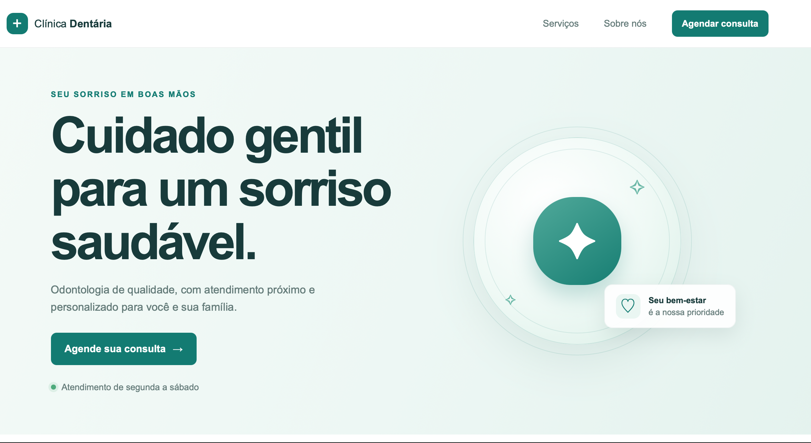
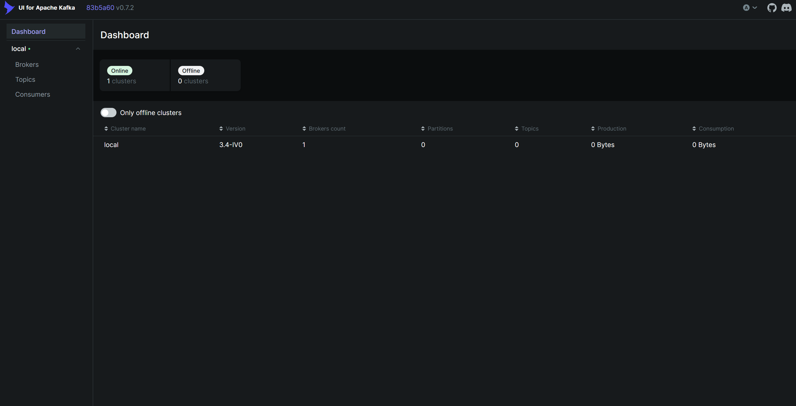
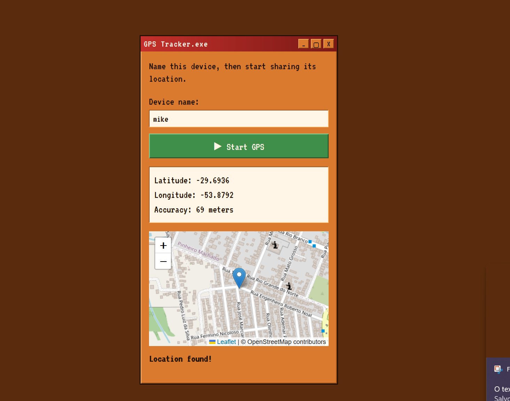
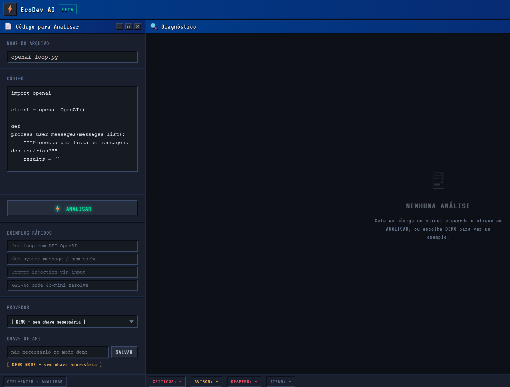
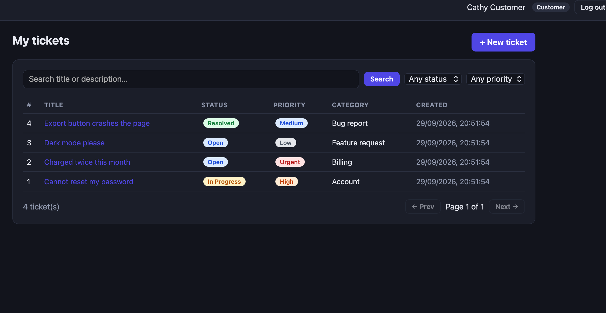

I'm Michael, a fullstack developer in training, focused on Python and building complete, end-to-end web applications. I work across the stack with FastAPI, Node.js/Express, MongoDB, and React, and I learn best by building real projects from scratch — from real-time geolocation tracking to AI-powered code auditing tools. I bring a strong sense of craft to my work, including a consistent personal design language across my projects. Currently completing a Fullstack Python Technician program and looking for my first opportunity as a junior developer.

Order cakes, sweets, and savory snacks by email or WhatsApp.

Mockup for a consultation scheduling system. Fully functional and responsive to my own email.

Books API is an asynchronous book management API built with FastAPI, Redis, Celery, and Kafka. The project includes authenticated CRUD operations, Redis caching, background task processing, Dockerized infrastructure, and scalable asynchronous backend architecture.

This project lets users track their real-time location on an interactive map, all wrapped in a nostalgic Win95-style UI — pixelated buttons, classic window chrome, and that unmistakable retro feel. Built as a hands-on way to dive deeper into geolocation APIs, real-time data handling, and database persistence with MongoDB Atlas.

(WIP) EcoDev AI scans code that integrates with AI APIs (like OpenAI, Gemini, or Claude) and flags common but costly mistakes — things like missing caching, unnecessary loops calling the API, prompt injection risks, or using an oversized model when a smaller one would do the job. Built with a financial lens: the goal is catching what's silently burning through API budget, not just what's technically "wrong."

This project is a full-stack helpdesk app where customers submit and track support tickets, and agents and admins manage them. It includes role-based access, ticket assignment and status tracking, private internal notes, a FastAPI backend, and a React frontend.